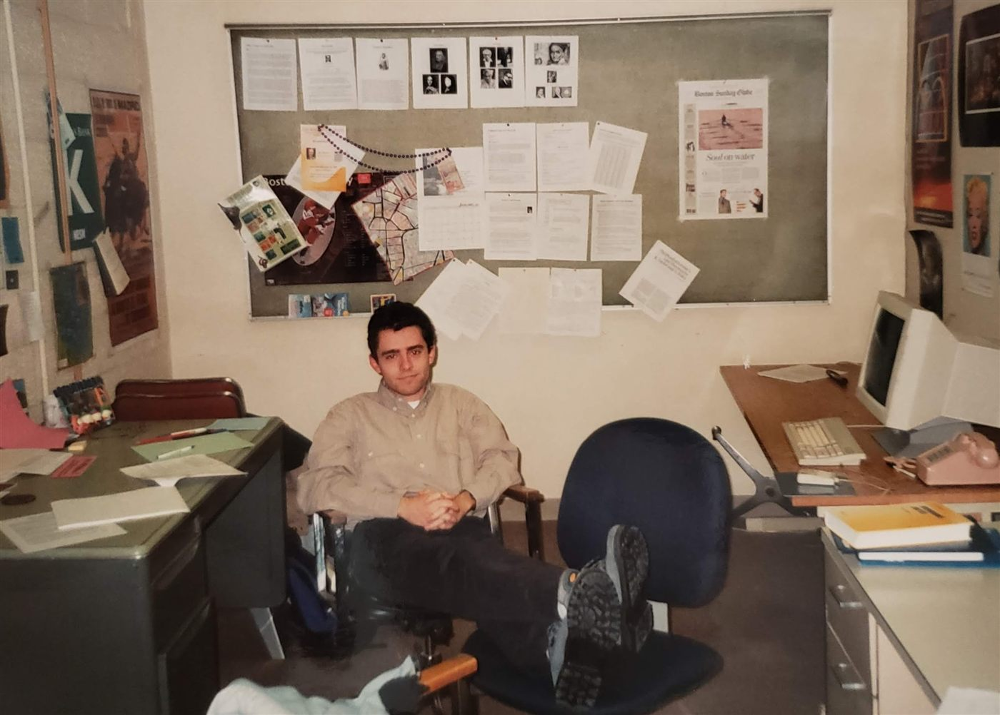
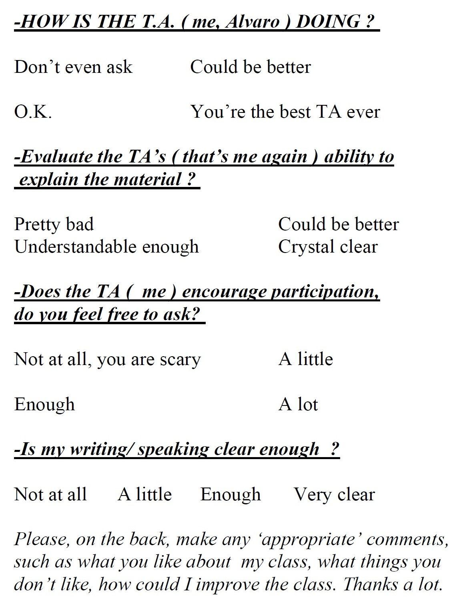
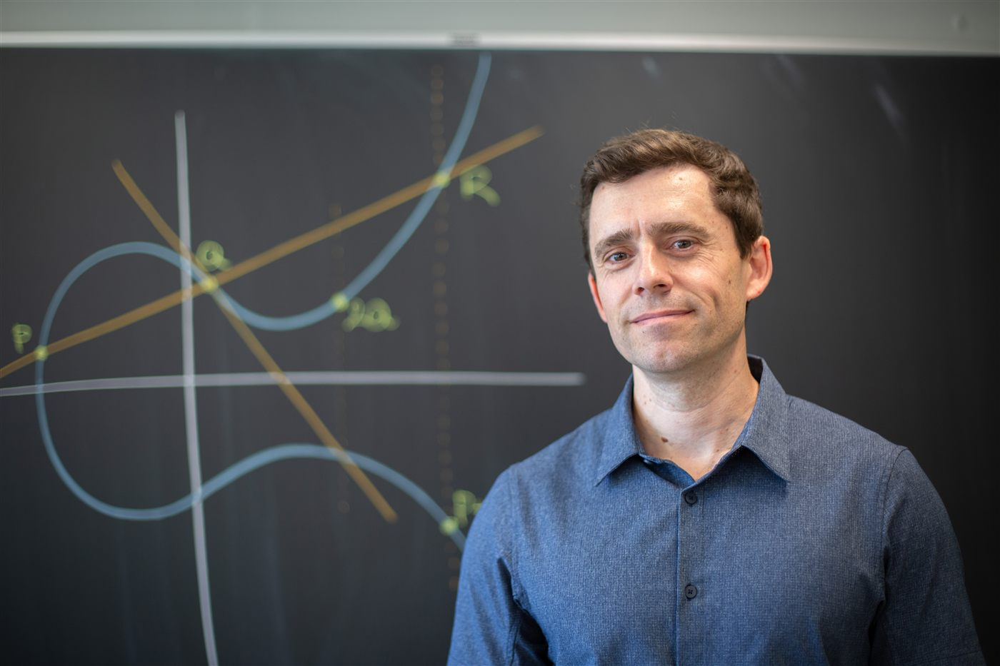

This is the author’s final version of an article first published in Notices of the American Mathematical Society 73, no. 8 (2026), published by the American Mathematical Society. © 2026 American Mathematical Society. The published version is available at https://doi.org/10.1090/noti3381. An earlier version of this story appeared on this blog on March 9, 2020.

Second week of the Fall semester, Tuesday, 8:30 a.m.
I am in my office in the Mathematics building at 111 Cummington Street, on the Boston University campus, fidgeting while I go over my notes for the nth time — just a few minutes before my very first class. As a teaching assistant (TA), I am only responsible for four weekly 50-minute discussion sections with about 20 students in each, but I am seriously nervous nonetheless. After all, it is the very first time I will be in front of a classroom.
— Can I do this? — I ask myself, and I simply do not know the answer to my own question. My career as a mathematician seems to hinge on this moment. What if I cannot do it? What if I am not cut out for teaching? What if I am a terrible instructor? What if it is a miserable experience, either for the students, or for me, or worse, for all of us? I have always loved doing math and talking about it. I am excited about the notion of teaching math, but I have little to no experience speaking in public. I am gripped by fear.
During my college years in Madrid, Spain, I would rarely participate out loud during a lecture, and I would even have a hard time approaching an instructor after class to ask a question. I choked on the words, stuttered, imperceptibly shook and, as a result, avoided engaging with most of my professors, unless strictly necessary. And all those interactions in college were in Spanish, in my native tongue, so my fears today are compounded since I have to run my discussion sections in English. What if the words do not come to me? What if the students do not understand me? What if they complain about (or mock) my foreign-sounding accent?
This is the beginning of my second year of graduate studies at Boston University (BU). Thanks to a scholarship, I did not teach during my first year, which allowed me to concentrate on my courses, on passing the preliminary exams and simultaneously improving my English skills, both written and spoken. My language and mathematical skills have indeed significantly improved, so that makes me feel slightly more confident about being in front of a class of students. But when I am nervous, my English-speaking ability regresses and noticeably deteriorates. And today, I am very nervous.
To add insult to injury, the end of the summer and the beginning of the Fall semester have been quite hectic and overwhelming for several reasons which were, briefly and in chronological order: a short trip to Spain, a teaching orientation, falling in love, moving out from my apartment and into a house with new friends, taking advanced courses, and meeting my potential thesis advisor.
One week before Fall classes start.
After my first academic year living in the U.S., I flew back to Spain to visit my family over the summer, but it was a short trip as I had to get back for a TA training that took place during the week before classes started. Given my anxiety about my impending teaching debut, I was looking forward to the orientation in hopes that there would be some helpful tips or instructional wisdom that would allow me to conquer my stage fright. Back then, the TA orientation at BU was a day-long event that began with back-to-back presentations by representatives from various administrative offices on campus. I barely recall the content of the anodyne presentations, except for the fact that almost every presenter emphasized one point above all others: Do not date your students!
When the first part of the orientation concluded, the graduate students were herded to an outdoors lunch on a quaint little lawn behind the BU Chapel, near the so-called BU Beach. I wondered: Have Bostonians never in their lives seen a beach? After grabbing some food, my fellow math graduate students congregated into a small group. The second-year students introduced ourselves to the first-year grad students and, together, we summarized the morning session and reached a consensus: All the information and talks we had heard so far were completely useless for a TA in mathematics. Our group was mostly joking about absolutely not dating students. For the most part, I tuned that out, as I was distracted by Marisa whom I had just met for the first time during the TA training.
Marisa was a first-year student who, after college, had moved to NYC to work as a consultant for a couple of years. Now she was going back to school to get a master’s degree in computational mathematics, which she hoped would ultimately lead to her dream job: applying mathematics to environmental modeling. I was immediately fascinated by everything about Marisa. Her passion, her determination, her real-life experience, her smile. In that moment, neither one of us could possibly fathom that in a few months we would start dating, shortly after a Halloween party at my house; that we would get married a few years later; that we would move to Maine, then New York, Connecticut, and back to Massachusetts; that we would make friends together, laugh and cry and enjoy life and suffer together; and that we would eventually buy a house and have two beautiful kids. Taking things one step at a time, I just tried to not make a fool of myself in her presence during that lunch break.
The second part of the orientation day was only slightly more useful. Subdivided into smaller groups, we were sent to classrooms to perform a teaching sample in front of an audience formed by a session leader and our fellow TAs in training. Each one of us was supposed to prepare a 5-minute mini-lesson on a topic in our area. A usual challenge for a mathematician is to choose a topic for an audience of grad students in various research areas, from the humanities to the sciences. After giving it some thought, I decided to present a short explanation on how to complete a square and apply it to solving a quadratic equation. I patiently waited my turn. After witnessing a few of the others' sample lessons, I was horrified that some of these people would be teaching students the following week. This only made me more nervous; I worried that I no doubt might be just as inept.
Finally, after much waiting and anticipation, it was my turn. I gave my little lesson, as best I could; not half bad, I thought. When I was done, I turned around and sheepishly waited for the room’s combined wisdom, comments, insights, thoughts, remarks, suggestions, and constructive criticism that would help me become a decent instructor.
— Good! — the session leader said. After a cursory look around to verify that no one could top such brilliant feedback, he continued — Next! — and that was that.
Weekend before Fall classes start.
As I had been warned, September 1st, also known as “Boston’s moving day,” is the most chaotic day of the year in the area. Seemingly the entire city’s population swaps apartments, packing one, moving furniture in any available vehicle, and unpacking all the belongings into their new living space — until the next September 1st comes around and they do it all over again. Certainly this seems to be the case for most of the many undergraduate and graduate students living in the area.
My own move from an apartment in Brookline to a house in North Brighton was stressful, as expected, but largely uneventful. My new roommates were fellow math grad students (one in algebra/number theory like me, and another in complex dynamics) and two of their friends, not mathematicians, who already had real-life jobs. Living with friends was a completely new experience for me, because I lived with my parents as an undergrad in Madrid, and during my first year in Boston I lived with two strangers who needed a third roommate. I was quite happy with the new living arrangement. Since I barely had any belongings (a bed, a shelf, a cactus on my windowsill, a few books, a stereo system, a large suitcase worth of clothes), the room I was assigned was the smallest in the house and my rent was, accordingly, the lowest. My room was indeed so small, that it may very well have been a walk-in closet for my roommate Caleb’s bedroom — we suspected it was in fact a walk-in closet that the landlord quite generously categorized as a bedroom. I did not mind the somewhat Spartan living — the lower rent would allow me to save some money for my flights to Spain and other trips in North America, and I would be able to buy a few math books that I had my eyes on for a while.

First week of Fall classes.
Boston’s moving day was a Saturday, Labor Day was on Monday, and classes started on a Tuesday. Discussion sections, however, did not begin until the second week of classes, so I had a week to get started with my own second-year graduate-level course load: algebraic geometry, algebraic topology, and a directed study in number theory. The latter was a reading course on the topic of elliptic curves with David Rohrlich. This was my first step in the choreography that is choosing a thesis advisor and thesis topic, so I spent many hours in the library reading — Joseph Silverman’s beautiful textbook “The Arithmetic of Elliptic Curves,” as well as other references for background — ahead of my first meeting with Rohrlich. The first meeting went smoothly, as we just went over the contents of the book and sketched a plan for the semester, so I knew what material I had to prepare to present to him each week. Rohrlich was, since day one, extremely gentle and polite, understanding and encouraging, which made the decision (on my part) of choosing an advisor one of the easiest of my life — as long as he reciprocated my advances and accepted me as his advisee! Which he did.
In addition to attending my own graduate courses, the calculus instructor whom I was assisting suggested that I attend the main lecture during the first week to get an idea of the pace and level of the material we were supposed to cover. Glad to do so, I went to the professor’s lectures, and she graciously introduced me to the class, so they all could recognize the face of the poor soul that would be trying to help them through their personal freshman calculus hell.

Second week of classes. Tuesday, 8:55 a.m.
I am walking down a sterile hallway in the basement of the Mathematics building toward a classroom, about to teach my very first class. In an attempt to remain calm, I breathe deeply at regular intervals, but it is barely helping. To keep myself busy, a mental list of things I need to discuss with the students circles in my head. When I reach the room, a few students are already waiting. They observe me with curiosity as I approach the desk at the front of the classroom. A couple of students in the back whisper to each other. On the blackboard, I meticulously write my name, my office number, my email address, and my office hours. There are still a couple of minutes left to kill before class starts, so I scan the room, and mentally count how many students have already arrived (fewer than expected), while I try to match faces to the names in my printed class list, to no use. My stomach is in a painful and seemingly non-trivial knot. I quickly go over my notes for the hundredth time this morning and look impatiently at my watch until the time is exactly 9 am.
One last deep breath, I start — Hello everyone! — and, immediately, I have the certainty that everything is going to be ok. Not because my nerves are gone (they aren’t), but because the students seem more nervous than I am, and that is strangely comforting and reassuring. I begin my script and, to my relief, I have no trouble easing into it. This is my name, this is how you pronounce it, here is my contact info, let us learn a bit more about you — perhaps, I think, some of the TA orientation tips are not that useless after all. I let the students introduce themselves, I ask them to tell me something fun they did during the summer, and I repeat their names a few times, trying to get the pronunciation up to an acceptable standard until they let me move on to the next person. I draw a small checkmark next to their names in my printout and notice that a number of students are missing. This reminds me to tell them that there will be quizzes at the end of each section (except today), and I categorically assert that there will be no make-up quizzes — unless a catastrophe happens, or there is a justifiable medical excuse — words that I will regret for the rest of my life. Once introductions are done, I tell them a bit more about what I intend to do during discussion sections, and I encourage them to bring questions and problems for solving to class so we can work on them together. And without further ado, we start reviewing some material from the previous week, and tackling as many prototypical exercises as time allows.
9:50 a.m.
Before I know it, our 50 minutes are up. I am surprised how fast time went by, and start packing my things. A few students approach me to ask me logistical questions about exams — I do not have answers at my fingertips, but I promise I will get back to them once I check with the main lecture instructor. Some students ask me about absences due to various reasons and events, and I emphasize once again that unless there are extraordinary circumstances, there will be no make-up quizzes, so they should plan the days they miss carefully.
As I leave the room, I am elated that class went much better than I had imagined it would and, in fact, it was truly enjoyable. Sure, some students had seemed disengaged, following my examples with an empty gaze, but others followed along with interest, and even answered some of my questions. Thus, I am ready to declare the first class a resounding success. As I head upstairs from the basement level, I cannot wait to share the good news with some of my fellow graduate students. I notice that Marisa is coming my way, so I am quickly calculating some words to share my educational victory with her when I realize that she is upset — she seems to be crying. She runs past me, going upstairs, and I do not have enough time to even finish my — is everything ok? — before she is gone. My happiness is instantly erased with the premonition that something is horribly wrong.
I walk towards the Mathematics department’s main office, and the silence in the hallway is unusual and eerie. A sound, out of place, starts to form and, as I approach the staff offices, I recognize it as, oddly, the voices of newscasters, coming from an old television set. Someone has rolled out a cart into the waiting area outside of the department chair’s office, and an antiquated TV set is on top of the cart. Staff members, faculty, the chair, and students have gathered in silence around the TV and are intently watching the images on the screen. A chill rolls down my spine, as I get closer to the small crowd and notice that a few people are sobbing, just like Marisa was.
— What happened? — I ask, softly, but no one responds. They keep watching the screen, inviting me to try to understand the images myself, for the scene is incomprehensible and impossible to explain in a few words. Both main towers of the World Trade Center in New York City are on fire, thick plumes of smoke flowing from the windows and rising above the buildings. I am about to formulate another question, trying to understand how it is that both towers would be on fire (as if just one would make more sense), but then the newscast replays footage of a Boeing 767, now known as Flight 175, crashing into Tower 2 of the WTC, followed by a huge explosion. I am trying to process this haunting image, when they cut to a live feed as, at 9:59am, that same tower collapses. The broadcast descends into chaos. A few of us gasp in horror and I join in the sobbing as tears now roll down my face.
It dawns on me that my parents might be watching the same images on the other side of the Atlantic ocean and are probably scared out of their minds for my well-being. I run out of the building, across the street, towards a payphone located next to a McDonald’s. Since I do not have enough change, I collect-call Spain, and my mother answers the phone. As I had correctly surmised, my parents are extremely relieved to hear my voice, even if I do not live in NYC. I have no comforting details or explanations to offer — no one does — and all I can say is that I am perfectly fine, if shaken and confused. And I am afraid, but I would not tell my parents that on the phone. I hang up and go back to the gathering by the TV only to learn that the situation has significantly worsened. Tower 1 has collapsed, the Pentagon is now reportedly on fire and another plane has crashed somewhere in Pennsylvania. As the newscasters estimate a possible death toll, the room starts spinning around me. Finding myself physically ill, I go to my office and follow the rest of the news from there, alone and in silence, as the nightmare unfolds.

September, 2001.
The worst terrorist attack imaginable was perpetrated while I was teaching my very first class. Practically everyone was traumatized by the horror in one way or another, because they had a friend, a family member, a loved one, or a former coworker directly affected by the attacks, or simply because they saw the images over and over in disbelief. Many of our students were touched by the tragedy, at a personal or psychological level, and during that semester instructors and TAs offered as many accommodations, homework extensions, and make-up exams and quizzes as necessary — no questions asked.
I will be forever mortified by my choice of words (unless a catastrophe happens) on that day. The whole situation also made me ashamed that I had been so self-centered for the previous several months. My worries about moving, teaching, my accent, research, seemed so trivial and petty all of a sudden, overshadowed by the magnitude of what was happening a few hundred miles away, and the impending wars in Iraq and Afghanistan. The attacks also made me open my eyes and reflect on how friendly and welcoming the USA and their people had been to me, and thinking about all that took place made me suffer in agony for all those that were personally affected by tragedy.
Teaching — particularly the first day of class — still makes me nervous, though not nearly as much as I was on September 11, 2001. Over time, however, I have come to embrace the first-day jitters: they remind me that I care deeply about teaching and motivate me to prepare thoughtfully for each semester. And when things do not go as well as I hope, I try to learn from my mistakes and improve in the next lecture, the next course, and the next teaching opportunity.
Acknowledgements: I am grateful to the editorial staff at the Notices for their thoughtful comments and guidance, and especially to Siobhan Roberts for her many insightful suggestions, which greatly improved this article.

About the author: ÁLVARO LOZANO-ROBLEDO is a professor of mathematics at the University of Connecticut. He received his PhD from Boston University in 2004. After temporary positions at Colby College and Cornell University, Álvaro has worked at UConn since 2008. His research interests are in the area of arithmetic geometry (the crossroads of number theory and algebraic geometry). He has published two books, “Elliptic Curves, Modular Forms, and their L-Functions,” and “Number Theory and Geometry.” Álvaro’s blog, A Field Guide to Mathematics, contains other short stories and also other pieces of interest to mathematicians. In his spare time, he makes videos on social media (@mathandcobb on TikTok, YouTube, or Instagram) with mathematical content and occasional comedy bits.